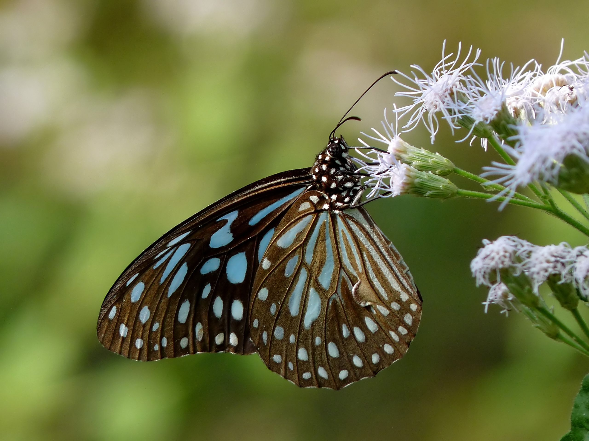
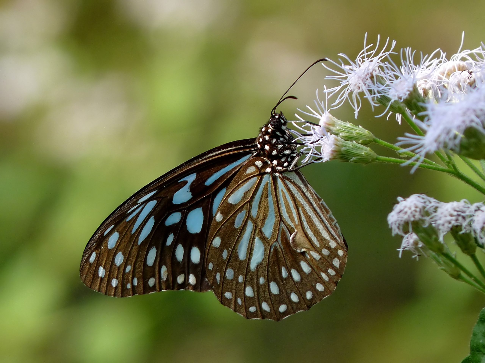

Butterfly, (superfamily Papilionoidea), any of numerous species of insects belonging to multiple families. Butterflies, along with the moths and the skippers, make up the insect order Lepidoptera. Butterflies are nearly worldwide in their distribution
The wings, bodies, and legs, like those of moths, are covered with dustlike scales that come off when the animal is handled. Unlike moths, butterflies are active during the day and are usually brightly coloured or strikingly patterned. Perhaps the most distinctive physical features of the butterfly are its club-tipped antennae and its habit of holding the wings vertically over the back when at rest. The lepidopteran life cycle has four stages: egg, larva (caterpillar), pupa (chrysalis), and adult (imago). The larvae and adults of most butterflies feed on plants, often only specific parts of specific types of plants.
Butterflies are often polymorphic, and many species make use of camouflage, mimicry and aposematism to evade their predators. Some, like the monarch and the painted lady, migrate over long distances. Many butterflies are attacked by parasites or parasitoids, including wasps, protozoans, flies, and other invertebrates, or are preyed upon by other organisms. Some species are pests because in their larval stages they can damage domestic crops or trees; other species are agents of pollination of some plants. Larvae of a few butterflies (e.g., harvesters) eat harmful insects, and a few are predators of ants, while others live as mutualists in association with ants. Culturally, butterflies are a popular motif in the visual and literary arts.


Many butterflies, such as the painted lady, monarch, and several danaine migrate for long distances. These migrations take place over a number of generations and no single individual completes the whole trip. The eastern North American population of monarchs can travel thousands of miles south-west to overwintering sites in Mexico. There is a reverse migration in the spring. It has recently been shown that the British painted lady undertakes a 9,000-mile round trip in a series of steps by up to six successive generations, from tropical Africa to the Arctic Circle almost double the length of the famous migrations undertaken by monarch. Spectacular large-scale migrations associated with the monsoon are seen in peninsular India. Migrations have been studied in more recent times using wing tags and also using stable hydrogen isotopes.
 

BUTTERFLY FOSSILS are rare. The earliest butterfly fossils are from the early Cretaceous period, about 130 million years ago. Their development is closely linked to the evolution of flowering plants (angiosperms) since both adult butterflies and caterpillars feed on flowering plants, and the adults are important pollinators of many flowering plants. Flowering plants also evolved during the Cretaceous period.

LIFE-CYCLE OF A BUTTERFLY Butterflies and moths undergo complete metamorphosis in which they go through four different life stages. Egg - A butterfly starts its life as an egg, often laid on a leaf. Larva - The larva (caterpillar) hatches from an egg and eats leaves or flowers almost constantly. The caterpillar molts (loses its old skin) many times as it grows. The caterpillar will increase up to several thousand times in size before pupating. Pupa - It turns into a pupa (chrysalis); this is a resting stage. Adult - A beautiful, flying adult emerges. This adult will continue the cycle.

Interesting facts about butterflies Butterflies don't taste with taste buds, but rather sensors located under their feet. A group of butterflies is known as a flutter. Butterflies can see beyond the ultraviolet spectrum and their eyes consist of a network of 6000 lenses.
Did you know that many adult butterflies do not excrete waste at all? As a matter of fact, many adult butterflies use everything they eat as energy. Contrarily to popular perception, the wings of butterflies are totally clear and the colors we see are the effect of light reflecting on the tiny scales covering them. The first thing a caterpillar eats after it hatches from its cocoon is usually the shell of the cocoon itself. In some places, you can find so many caterpillars feeding on plants that you can actually hear them munching.

Most butterflies are found in tropical rainforests, but they can live in all climates and altitudes of the world.